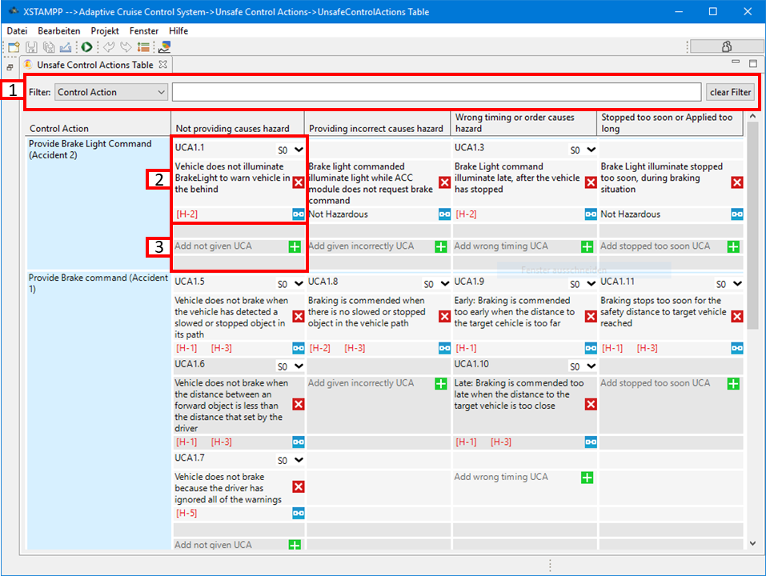

Control Actions, added in the view labeled "Control Actions", can be marked as unsafe in
the Unsafe Control Actions Table.
Adding, Deleting and Editing an Unsafe Control Action
can be used to describe the status of the system when the Control Actions is not
given, was given incorrectly, had wrong timing or was stopped too soon. This status can
be linked to a Hazard.
Link a Hazard to an Unsafe Control Action
When linked to a Hazard, the corresponding Control Action is marked unsafe and will
appear in the Corresponding Safety Constraints Table. is used to link a Control
Action to a Hazard. Press and a list of available Hazards will pop up. Link a Hazard
by doubleTclicking on it.